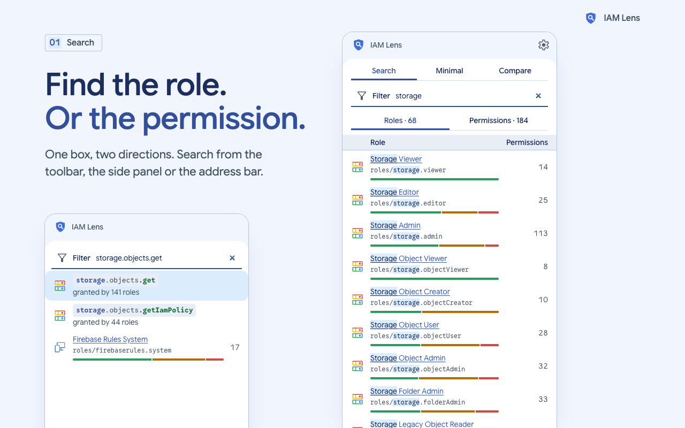
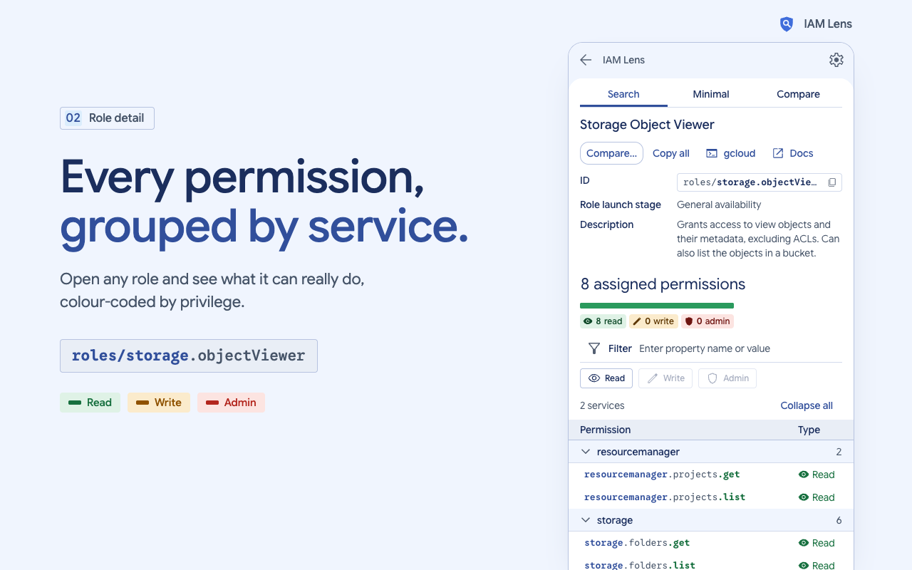
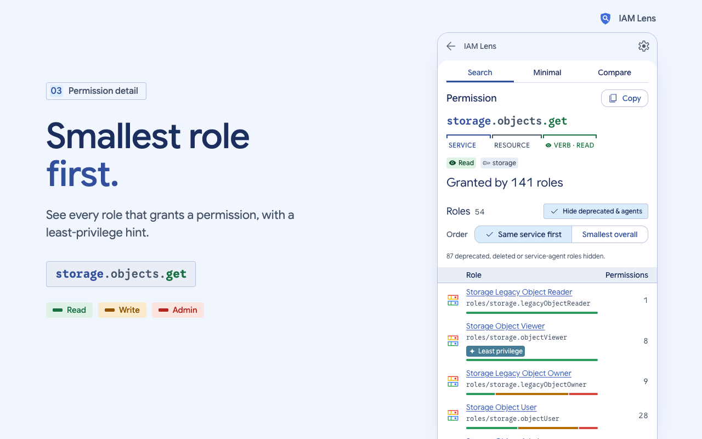

What it does
- Search every predefined Google Cloud role and permission from one box.
- See what a role contains, with each permission split into service, resource and verb and a read, write and admin privilege bar.
- Start from a permission and find the roles that grant it, including the smallest roles that cover it.
- Compare roles side by side.
- Optionally sign in to include your own custom roles.



How sign-in works and what data is used
Signing in with Google is optional. Without it, IAM Lens works entirely from a bundled snapshot of the predefined roles.
- After you sign in, IAM Lens makes read-only
GETcalls to the Google IAM API (roles.list) and to Cloud Resource Manager (project and organisation search) to find your custom roles. - The access token stays in your browser. It is never sent to the developer or to any third party.
- Custom roles are stored locally in the extension and are deleted when you sign out.
- There is no analytics, tracking or remote code.
Details are in the privacy policy.